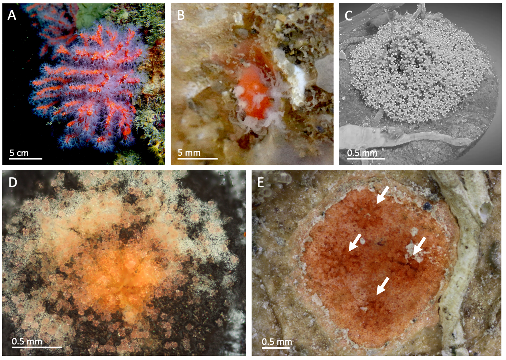

My research is driven by quantitative considerations in biology with a systems point of view.
The biological questions in the focus of my research are on mechanisms resulting from networks of interacting components. Some of the mechanisms I have studied in the past are related to cancer pharmacology, diabetes, synthetic biology, and DNA computing.
My research in systems and synthetic biology makes extensive use of simulation models and formal methods from computer science. I am especially inspired by the idea of computer-aided design of synthetic biology applications.The interplay between practical problems in biology and the theoretical aspects of computer science is in the heart of my research. I aim at bridging theoretical considerations in computer science and applied mathematics to solve practical problems.
Methods for quantifying how biological systems use and recycle resources are relevant well beyond synthetic biology.
In pharmacology too, understanding cellular resource turnover should help clarify the system-level consequences of
drug action, engineered pathways, and therapeutic interventions.
The chapter presents a quantitative framework for comparing resource-flow dynamics and causal patterns across different model parameter regimes.
As a case study, the chapter examines the E. coli two-component system for inorganic phosphate uptake and shows how synthetic promoter variants affect ATP-related resource economy.
Genetic data is highly sensitive. Sharing genetic data between collaborative partners requires privacy preserving measures. We propose a framework for generating synthetic genotype data that balances privacy and utility for a given metric. The framework combines an iterative feedback-driven optimization process with utility metrics, and membership-inference-based privacy evaluation.
[LINK] Balancing Privacy and Utility in Synthetic Genotype Data Generation by Adaptive Optimization,This paper presents an automated temporal schema optimisation approach for NoSQL wide-column stores (specifically Cassandra). It tackles the key challenge of choosing between referencing vs denormalisation strategies by using a cost model that balances read/write performance based on data characteristics and workload patterns. The result: schemas that reduce workload latency by up to three orders of magnitude for the most expensive cases.
[LINK] Automated Transformation of Temporal Conceptual Models into Cassandra Schemas,"Explaining the causal structure underlying the dynamic function of living systems is a central goal of biology." In this paper, by bridging methods from computer science and computational biology, we address this concern for a setting, broadly used in many systems biology models. Our results provide a means for comparing objects of study in this domain, a fundamental capability that is essential for a deeper understanding in science.
[LINK] Quantifying and comparing causal patterns in stochastic chemical reaction networksGenetic data is becoming increasingly widespread. It will be even more so in the next decade with decreasing sequencing costs. This paper explores the promising potential of relational databases in storing and querying VCF data at the dawn of the multiomics age in personalised medicine.
[LINK] Relational Data Models for Genetic VCF dataIn the first chapter of this book, I describe how mathematical modelling realises a computer-aided design vision in creating living technologies based on microorganisms. The aim here is to make synthetic biology a field of engineering rather than a purely experimental discipline based on trial and error.
[LINK] Chemical Reaction Models in Synthetic Promoter Design in BacteriaA tool for examining causal patterns in biological pathways: what downstream effects does a perturbation trigger?
[LINK] Causal Analysis in Bio-pathways via Stochastically Simulated PerturbationsAutomated reasoning is hard, so it is no wonder that LMMs struggle with it. Yet, automated provers are pushing the envelope for industrial applications these days. Can we achieve competitive results with analytic provers? That is what I investigate in this paper.
[LINK] Proof Search in Deep Inference: The Need for Shallow InferenceOur paper, accompanying our previous modeling paper, reports observations about early development in Mediterranean corals Corallium rubrum.
[LINK] Early stages of development in Mediterranean red coral (Corallium rubrum): the key role of sclerites.Our paper describes the processes that drive early colony formation in Mediterranean corals Corallium rubrum.

Check out our paper to see how epidemics spread on scale-free networks!
[LINK] How network properties and epidemic parameters influence stochastic SIR dynamics on scale-free random networks.Our recent paper demonstrates a mechanism with which bacteria manage their resource economy. Check it out!
[LINK] The inverse correlation between robustness and sensitivity to autoregulation in two-component systems.Our paper on analysing noise in synthetic biology applications via stochastic simulaitons is now published.
[LINK] Stochastic Simulations as a Tool for Assessing Signal Fidelity in Gene Expression in Synthetic Promoter Design.
My proposal “Understanding Coral Colony Morphology via Stochastic Modelling” (UNICOMS)
has been accepted for the 7th call of the
ASSEMBLE Plus Transnational Access program.
James Lynch and I are
editing a special issue on
Computational Methods in Synthetic Biology at the MDPI Biology journal. Submissions are welcome!
Please email us for any inquiries.
I talked about
modelling life at TiramiScience.
I presented an abstract
on our model of growth and branching in mediterranean red coral colonies
at the DSABNS conference.
Elena presented her preliminary results on
Signal fidelity in Escherichia coli phosphate response with synthetic promoters
at the DSABNS conference.
I presented a model of growth and branching in mediterranean red coral colonies
at the TPNC conference.
Stochastic Mechanisms of Growth and Branching in Mediterranean Coral Colonies
O. Kahramanoğulları, L. Bramanti, M. C. Benedetti
Proceedings of 8th International Conference on the Theory and Practice of Natural Computing
TPNC 2019, Kingston, Canada, December 9-11, LNCS, Springer, 2019.
Here is a video of the colony growth generated by a stochastic simulation with the model.
The paper of my invited talk at NUMTA
is now in press. The slides of the talk are
here.
Stochastic Mechanisms of Information Flow in Phosphate Economy of Escherichia Coli
O. Kahramanoğulları, C. Uluseker, M. M. Hancyzc
Proceedings of 3rd International Conference on Numerical Computations: Theory and Applications,
NUMTA 2019, Le Castella, Italy, June 15-21, LNCS, Springer, 2019.
Here is a video that displays the dynamic evolution of the
fluxes after a sudden change in external phosphate concentration at 7000
secs into the simulation.
Our paper on growth and branching in mediterranean red coral colonies
is accepted at the TPNC conference.
Stochastic Mechanisms of Growth and Branching in Mediterranean Coral Colonies
O. Kahramanoğulları, L. Bramanti, M. C. Benedetti
Proceedings of 8th International Conference on the Theory and Practice of Natural Computing
TPNC 2019, Kingston, Canada, December 9-11, LNCS, Springer, 2019.
We are finalizing the Living Architecture project with the final review. Check out the below video. Here is the PDF brochure as well.
I gave a talk about E. coli phosphate economy at the Italian Regional Conference on Complex Systems CCS/italy.